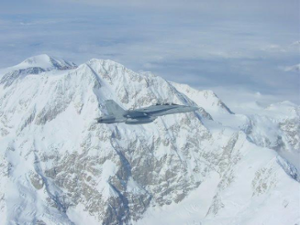

Air Intelligence and Signals Intelligence Officers
These officers analyze information and intelligence to support aviation operations and the broader MAGTF. They enable commanders to make informed decisions in complex, contested environments.
Pilots and aviation Marines who support the fight from the air.
The Marine Corps succeeds as a premier military force through cohesive effort across all battlefronts. Marine pilots and aviation support Marines serve in MOS fields that provide offensive air support, assault support, anti-air warfare, electronic warfare, aircraft and missile control, and aerial reconnaissance.
These officers analyze information and intelligence to support aviation operations and the broader MAGTF. They enable commanders to make informed decisions in complex, contested environments.

Air Support Officers coordinate and control aircraft in support of ground combat units. They serve as the critical link between Marines on the ground and aviation assets overhead.

The F-35B is an advanced multi-role strike fighter. Marine pilots employ fifth-generation capabilities that integrate stealth, sensors, and networked warfare to support Marines on the ground and across the MAGTF.
UAV Pilots lead unmanned aircraft system operations for intelligence, surveillance, reconnaissance, and strike support. They plan and execute missions that extend the commander's reach and provide persistent awareness for the MAGTF.

Marine fixed-wing pilots fly advanced tactical aircraft in support of Marine Aviation missions — assault support, anti-air warfare, offensive air support, electronic warfare, and aerial reconnaissance — in support of operations around the world.

Tilt-rotor pilots combine transport capability with speed similar to fixed-wing aircraft. MV-22 missions mirror rotary-wing assault support while extending range and flexibility for expeditionary operations.

Attack helicopter pilots provide close air support and escort for ground forces. They employ precision fires and maneuver to destroy enemy targets in support of Marines on the battlefield.

Utility helicopter pilots transport personnel and equipment, provide command and control, and support assault operations. They are essential enablers for maneuver across the battlespace.

The CH-53 is the workhorse of Marine Aviation. Pilots lead crews whose primary mission is to transport Marines, heavy equipment, and supplies in support of the MAGTF — from combat to humanitarian assistance.

Fixed-wing transport pilots move personnel, equipment, and supplies across the area of operations. They sustain the MAGTF through aerial refueling, logistics, and rapid deployment.